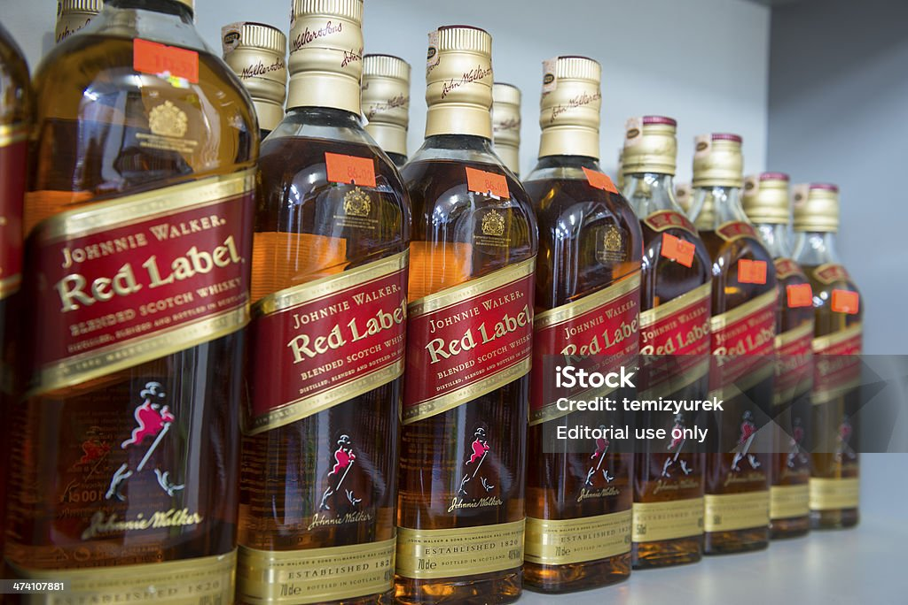

Red Label

En el vibrante mundo del whisky, existe un ícono que se destaca por su inigualable carácter y su legado centenario: Red Label. Con una historia que se remonta a más de un siglo, este whisky escocés cautiva los sentidos y despierta la pasión de los amantes del buen beber en todo el mundo. Desde su creación por parte de los visionarios maestros mezcladores de Johnnie Walker, Red Label ha sido un símbolo de audacia y distinción. Su inconfundible sabor, equilibrado y lleno de matices, es el resultado de una cuidadosa combinación de whiskies de malta y de grano
Pero Red Label es más que un whisky excepcional; es un emblema de la vida misma. Su botella, envuelta en el icónico color rojo de la marca, es un símbolo de pasión y determinación, un recordatorio de que cada momento merece ser celebrado con fervor y alegría. Ya sea en una reunión íntima entre amigos o en una fiesta bulliciosa, Red Label siempre marca la diferencia, elevando cada ocasión a nuevas alturas de emoción y camaradería.Así que déjate seducir por el espíritu audaz de Red Label y descubre por ti mismo por qué este whisky es más que una bebida: es una experiencia que nunca olvidarás. Eleva tu vida con cada sorbo y haz de cada momento una celebración inolvidable con Red Label, el whisky que siempre marca la diferencia.
$500
Proceso de catacion
A continuación, les dejamos un video sobre el proceso de catacion sobre este rico y saborable whisky.